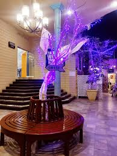

Welcome to Courtyard Cafe, SUKKUR's spot for artisan coffee and fresh brunch. We believe good coffee brings people together. Our space is designed for slow mornings, long conversations, and a break from the rush.
Every cup is brewed with care, and every dish is made fresh daily. Come for the coffee, stay for the vibe.
Explore Menu